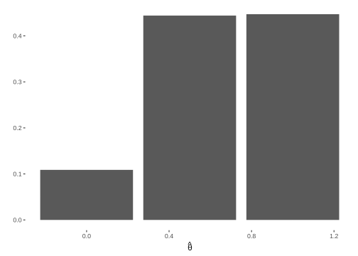
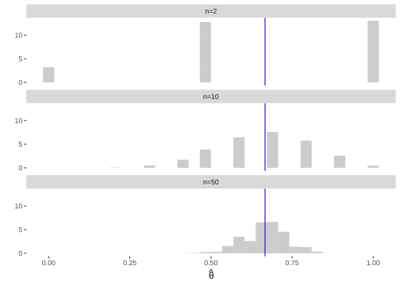
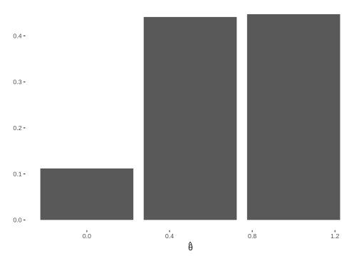
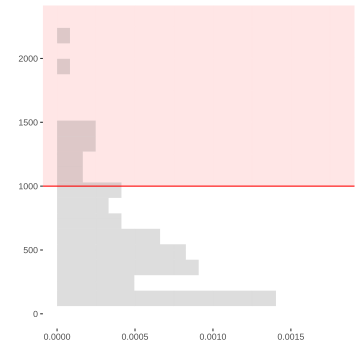
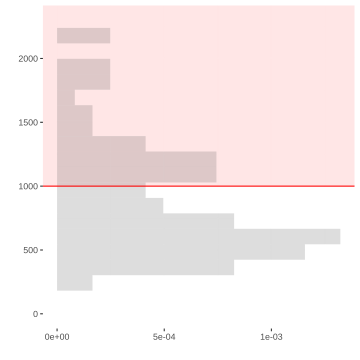

The first two sections are meant to be done before Thursday’s class — they are what that class builds on. The rest is easier once you have been to it. The due date is Thursday at midnight, which does not really give you time to do everything after the class, so do the early parts first and don’t save them.
This homework is about calibrating interval estimates. We will cheat by working with populations we know. That lets us build the sampling distribution, choose an interval width, and check how often the resulting intervals cover the truth.
We start with a die, where we can do every calculation by hand. Then we use the same procedure on NBA data.
A Die
Roll a six-sided die. If you don’t have one, ask me and I’ll give you one.
Exercise 7.1
Exercise
Roll it thirty times and write down how often each face came up.
Then, by hand on paper, draw the histogram of those thirty rolls — one bar per face, its height the number of times that face came up. Photograph it and put it in your answer along with your six counts.
Each of the six faces is equally likely — the probability of rolling any particular one is \(1/6\). Does that mean the six bars should come out the same height?
SolutionSolution
No. The \(1/6\) describes what the die does in the long run, and thirty rolls is not the long run. A sample doesn’t look like the thing it came from — not exactly, not usually, and the smaller the sample the less it does.
Mine came out 6, 3, 7, 4, 5, 5, which is about as lopsided as you would expect and nothing to worry about.
That is the whole subject of this assignment, and you have just done it by hand with an object you can hold.
A population of six sides
Think of the sides of the die as a population. Write \(j=1,\ldots,6\) for a side’s position and \(y_j\) for the value written on it. For this die, \(y_j=j\).
side ($j$)
value ($y_j$)
1
1
1
2
2
2
3
3
3
4
4
4
5
5
5
6
6
6
The first roll, \(J_1\), chooses a member of that population, every one equally likely. The value we observe is \(Y_1=y_{J_1}\).
probability
value of \(Y_1\)
1/6
1
1/6
2
1/6
3
1/6
4
1/6
5
1/6
6
This table is the distribution of \(Y_1\).
Suppose we want to know the probability that a roll is 3 or more. Nobody looks this up in a book. They count. Four of the six outcomes are 3 or more, so the probability is 4/6.
The probability it doesn’t happen—the complementary probability—is 2/6.
probability
value
2/6
0
4/6
1
This is the distribution of the indicator \(1_{\ge 3}(Y_1)\), which is defined like this:
\[
1_{\ge 3}(y) = \begin{cases} 1 & \text{ if } y \ge 3 \\ 0 & \text{ otherwise.} \end{cases}
\]
Counting worked because two different faces cannot come up on the same roll. The probability of getting one face or another is therefore the sum of their probabilities. That is disjoint additivity of probabilities. We’ll talk about this later in the semester when we get more formal about probability.
Marginalization
We just worked this out by counting. Now we’re going to formalize that idea in a way that generalizes pretty well.
Instead of going directly from the probability distribution of one thing to the probability distribution of another, we talk about the probability distribution of both things together — the probability distribution of the pair.
For a six-valued die and a two-valued indicator, there are \(6 \times 2 = 12\) possible pairs. Thankfully, this is an easy case. Our indicator \(1_{\ge 3}(Y_1)\) is a function of the die value \(Y_1\). Whenever we know the value of \(Y_1\), we also know the value of \(1_{\ge 3}(Y_1)\). If we wanted to put the other six pairs into our table, we could, but we know that they don’t happen. Their probability is zero. So practically speaking, we can add a function to our probability table for free. We just add a column with the function’s value for each die value.
probability
\(Y_1\)
\(1_{\ge 3}(Y_1)\)
1/6
1
0
1/6
2
0
1/6
3
1
1/6
4
1
1/6
5
1
1/6
6
1
Then we get the distribution of the indicator by summing the probabilities of the rows with the same value in the indicator column. This is called marginalization.
Estimation
We ask a question about the six sides of the die: what fraction are 3 or more? That is, if we call the sides \(y_1,\ldots,y_6\), we want this:
We’re going to estimate it by rolling \(n\) times and calling the values \(Y_1,\ldots,Y_n\). This is a sample drawn with replacement: the same value can appear twice because the die does not know what it did last time. The fraction of rolls that are 3 or more is our estimate:
Here we’re following a convention in which we write our targets as some greek letter. Often \(\theta\). And add a ‘hat’, the thing above the letter theta in \(\hat\theta\), to indicate an estimator of that thing.
When we repeat the sample, \(\hat\theta_n\) changes. Its sampling distribution lists the values it can take and how often each one occurs. We can work it out exactly here because the population is small enough to count.
Sample Size One
Exercise 7.2
Exercise
Use your thirty rolls to approximate the sampling distribution of \(\hat\theta_1\). Compare your approximation with the exact distribution in the indicator table above.
SolutionSolution
For each roll, \(\hat\theta_1\) is 1 if the roll is at least 3 and 0 otherwise. So the fraction of your thirty rolls that are at least 3 approximates the probability that \(\hat\theta_1=1\), and the remaining fraction approximates the probability that \(\hat\theta_1=0\).
The exact sampling distribution is
probability
value of \(\hat\theta_1\)
2/6
0
4/6
1
Your two proportions should be somewhere near 2/6 and 4/6, though with only thirty rolls they will probably not be exact.
Sample Size Two
Exercise 7.3
Exercise
Now take \(n=2\). Make a table of the possible pairs of die sides and the value of \(\hat\theta_2\) for each pair, then marginalize the table to get the sampling distribution of \(\hat\theta_2\). Write out the calculation you used.
Could you have made this easier on yourself? Hint. What did you learn about addition in middle school?
SolutionSolution
You can do this by listing all 36 ordered pairs of die values, calculating \(\hat\theta_2\) for each pair, and adding the probabilities of the pairs that give the same value.
There is an easier way. We already marginalized one die value to its indicator: 0 has probability \(2/6\) and 1 has probability \(4/6\). We can start there, pair two indicators, and then marginalize again. Because addition is associative, doing the sums in this order gives the same answer as doing all 36 rows at once.
both rolls below 3: \(2 \times 2 = 4\) pairs, and \(\hat\theta_2 = 0\).
one of each: \(2 \times 4 + 4 \times 2 = 16\) pairs, and \(\hat\theta_2 = 1/2\).
both at least 3: \(4 \times 4 = 16\) pairs, and \(\hat\theta_2 = 1\).
probability
value of \(\hat\theta_2\)
4/36
0
16/36
1/2
16/36
1
The three counts add to 36, which is the check that we haven’t missed any pairs.
That is the sampling distribution of \(\hat\theta_2\). Not an approximation to it — the thing itself, obtained by counting equally likely outcomes and adding up the ones that agree.
Exercise 7.4
Exercise
The opening exercise gave you thirty values of \(\hat\theta_1\). Now roll two dice thirty times and calculate \(\hat\theta_2\) each time. Compare the two distributions. What changed when the sample size went from one to two?
SolutionSolution
Your particular counts will vary. Both distributions are centred in the same place, but the sample-size-two estimates spend more of their time away from the endpoints and closer to the centre.
Exercise 7.5
Exercise
Use your thirty values of \(\hat\theta_2\) to draw thirty interval estimates, each centred at one value. Give them all the same width \(w\), so the interval centred at \(\hat\theta_2\) runs from \(\hat\theta_2-w/2\) to \(\hat\theta_2+w/2\). Choose the smallest \(w\) for which at least twenty of the thirty intervals contain \(\theta=2/3\).
Start at \(\theta\) and count outward through your thirty values. Draw the intervals, report their width \(w\), and count their coverage.
SolutionSolution
Your answer depends on your thirty rolls. Put the thirty distances \(|\hat\theta_2-2/3|\) in order. The twentieth distance is the half-width, so double it to get the interval width. Then count how many of your thirty intervals contain \(2/3\).
The classroom picture to keep in mind: the estimand is \(2/3\), and at a narrow width only the intervals centred at \(1/2\) cover it. As the width grows there are four width regimes: with half-width below \(1/6\) nothing covers; from \(1/6\) up to but not including \(1/3\) exactly the intervals centred at \(1/2\) cover; from \(1/3\) up to but not including \(2/3\) those centred at \(1/2\) and at \(1\) cover; at \(2/3\) and beyond every interval covers. The distances that matter are \(1/6\) from \(1/2\) to \(2/3\) and \(1/3\) from \(1\) to \(2/3\).
In class the function below was walked through as: enumerate the draws, take each draw’s distance from the centre, and put those distances in order. The \(.95\) quantile is the 95th percentile: the smallest observed distance containing at least \(95\%\) of the draws. With type = 1 that quantile is the 29th of the thirty ordered distances — the conservative choice, including rather than interpolating — so at most one draw lies strictly beyond it, fewer when distances tie. That distance is the half-width, so the function doubles it to get the width. Because the draws take only a few distinct values the coverage comes in steps: you overcover rather than land exactly on the nominal level.
This function does what you just did by hand. It calculates every draw’s distance from the centre, puts those distances in order, and takes the first one that reaches the target coverage. Then it doubles that distance to turn a half-width into a width.
width =function(draws, center =mean(draws), alpha = .05) {2*quantile(abs(draws - center), 1- alpha, type =1)}
Simulating
Counting worked because there were 36 pairs. At \(n=3\) there are 216, at \(n=5\) there are 7776, and the assignment is not going to ask you to count those.
We are not going to ask you to do these larger calculations by hand. The code does the same things you just did: build the sampling distribution, then count outward from its centre until the interval reaches its target coverage.
Exercise 8.1
Exercise
You worked out the sampling distributions and calibrated the interval estimates by hand. Now use the code below to check your work. We are only asking you to fill in the estimator and the estimand.
For \(n=2\), calibrate the interval width and check the coverage. Compare them with the interval width and coverage you calculated by hand.
SolutionSolution

66.66667%
0.6666667
[1] 0.8912
At \(n=1\), the two heights come out near \(2/6\) and \(4/6\), which is what we got by marginalizing. At \(n=2\), the three heights come out near \(4/36\), \(16/36\), and \(16/36\), which is what we calculated by hand. The calibrated width is \(2/3\), and its coverage is near \(8/9\). The simulated answers are not exact because ten thousand repetitions are themselves a sample, but they are close to all three hand calculations.
That agreement is the point of doing it both ways. From here on we will simulate sampling distributions we cannot count, and this is the reason to believe them.
Exercise 8.2
Exercise
Now run it at \(n=10\) and \(n=50\), and put the histograms for \(n=2\), \(n=10\), and \(n=50\) next to each other.
What happens to the sampling distribution as \(n\) grows? Say what happens to where it sits and what happens to how wide it is, and say which of those two you would have predicted.
SolutionSolution

It stays put and it gets narrower. It sits around \(4/6\) at every sample size — the blue line — because the die is the same die. What changes is the width: at \(n=2\) the estimate is regularly 0 or 1, and by \(n=50\) it is almost always somewhere near \(2/3\).
The narrowing is the part worth predicting, and most people do. More data, less scatter.
NBA Data
A population of six players
Now do the same thing with a different population. Here are the Atlanta Hawks’ starters and their sixth man, along with the points each scored over the 2023 season.
roll ($j$)
player
points ($y_j$)
1
1
Dejounte Murray
1515
2
2
Trae Young
1914
3
3
John Collins
931
4
4
Saddiq Bey
1062
5
5
De'Andre Hunter
1029
6
6
Onyeka Okongwu
791
Rolling the die chooses one player, every one equally likely. Now \(Y_1\) is the chosen player’s point total.
Exercise 9.1
Exercise
Add an indicator column for whether the player scored at least 1000 points. Then marginalize the six-row table to find the distribution of that indicator.
SolutionSolution
probability
roll
points
at least 1000?
1/6
1
1515
1
1/6
2
1914
1
1/6
3
931
0
1/6
4
1062
1
1/6
5
1029
1
1/6
6
791
0
probability
at least 1000?
2/6
0
4/6
1
Four of the six players scored at least 1000, so the probability that one roll selects one of them is \(4/6\).
Exercise 9.2
Exercise
Now work out the sampling distribution of \(\hat\theta_2\), where the indicator is 1 when the selected player scored at least 1000 points. Write out the calculation you used.
SolutionSolution
The Hawks’ indicator has the same distribution as the die indicator: four rolls give a 1 and two give a 0. So \(\hat\theta_2\) has the same sampling distribution.
probability
value of \(\hat\theta_2\)
4/36
0
16/36
1/2
16/36
1
You have now repeated the hand calculation with the Hawks’ six. Now repeat the code check using the estimator you defined for the die. The sampling, replication, plot, interval width, and coverage calculation are supplied.
Exercise 9.3
Exercise
Use the code below to simulate the sampling distribution of \(\hat\theta_2\) for the Hawks’ six. Compare it with the distribution you calculated by hand. Then use the simulated distribution to calibrate the interval width and check its coverage.
SolutionSolution

66.66667%
0.6666667
[1] 0.8881
The three bar heights are near \(4/36\), \(16/36\), and \(16/36\), which is what you calculated by hand. The simulation uses the same estimator, sampling distribution, interval calibration, and coverage check that you used for the die.
Two Samples
A mutual friends gives us some data describing the performance of NBA players in the 2023 season. Actually, they give us different data—they give me ‘sample 1’ and you ‘sample 2’. They say these are samples of size 100 drawn with replacement from the population of all players that played in the league that year.
Theres a fair amount of information about the players in our samples. Here’s a list of the variables we have.
Player - The player’s name.
Team: The team whose this player is playing for this season in abbreviated term.
Age: The Age of the player.
GP: The number of games that the player has played in this season.
W: The number of games won in which the player has played.
L: The numer of games lost in which the player has played.
Min: The minutes the player has played for this season.
PTS: The number of points made by the player.
I’ll work through my sample first. Then you’ll repeat the same analysis with yours.
An Estimation Problem
We ask the same question we asked about the Hawks’ six, on the whole league: what fraction of players scored at least 1000 points?
My estimate, for what it’s worth, is 0.13.
Y = my.sample$PTSn =length(Y)theta.hat =mean(Y >=1000)theta.hat
[1] 0.13
To put it in context, I plot my points around the thousand-point line.
library(ggplot2)scale_y =scale_y_continuous(breaks=seq(0,2000,by=500), limits=c(0,2300))scale_x =scale_x_continuous(breaks=seq(0,2000,by=500), limits=c(0,2300))no_labs =labs(x='', y='')points.plot =ggplot(data.frame(i =1:n, y = Y)) +annotate("rect", xmin =-Inf, xmax =Inf, ymin =1000, ymax =Inf,alpha = .1, fill ="red") +geom_point(aes(x = i, y = y), alpha = .4) +geom_hline(aes(yintercept =1000), color ="red") + scale_y + no_labs points.histogram =ggplot(data.frame(y = Y)) +annotate("rect", xmin =1000, xmax =Inf, ymin =-Inf, ymax =Inf,alpha = .1, fill ="red") +geom_histogram(aes(x = Y, y =after_stat(density)), bins =20, alpha = .2) +geom_vline(aes(xintercept =1000), color ="red") + scale_x + no_labspoints.plot

Here the x-coordinate is irrelevant. I’ve plotted pairs \((i,Y_i)\) where \(i=1 \ldots n\) counts out the observations in our sample and \(Y_i\) is the number of points the \(i\)th player in my sample scored. The red horizontal line is the thousand-point mark, so my estimate \(\hat\theta\) is the fraction of the dots sitting above it.
To make it a little easier to see the distribution of season point totals in my sample, I plot a histogram and annotate it with the same line—still red, but now vertical to fit into the layout of the histogram. The shaded region is where the indicator equals 1. The area of the histogram bars inside that region approximates \(\hat\theta\); when a bin crosses the thousand-point line, the histogram has grouped together points on both sides.
To make these fit together nicely, I rotate my histogram and lay my two plots out side by side so that the bins of the histogram align with the individual players’ points.1
This coord_flip() call rotates the histogram plot so the bins are horizontal.
2
The theme(...) call turns off the vertical ‘tick labels’ 0, 500, … in the plot on the right. They’re redundant because our grids are aligned and we’ve already got the on the left.


Exercise 9.4
Exercise
Replicate my analyis using your sample. Report your estimate as well as your two plots.
Hint. You should be able to do this with a one-line change to my code.
SolutionSolution
Y = your.sample$PTSn =length(Y) theta.hat =mean(Y >=1000)theta.hat
1
This is the only line of code that’s different.
The estimate is 0.4. To get it, you can just rerun all the code above after making the one-line change indicated by the (1) mark. The result should look like this. Different looking sample. Way more big-scorers.
In class the two answers were about 13% versus about 40% at about \(n=100\) each, and the point was that this gap is not ordinary sampling variation at that sample size. When two runs of the same procedure come back that different, treat it as a signal of a bug or a misunderstanding rather than randomness. The diagnostic move is to plot both samples in different colours on the same axes: they look like two completely different stories, one where clearing 1000 points is common and one where it is rare.


My estimate and yours are fairly different, even though our friend says both samples came from the same population. That difference could just be sampling variation. To find out, we ask our friend for the data on every player in the league.
Knowing the whole population lets us simulate what estimates from samples of 100 usually look like. Then we can see whether your estimate is a plausible result of sampling from this population.
To get a sense of the sampling distribution of the estimator you and I are using, draw 10,000 samples of size \(n=100\) with replacement from this population, and get, for each sample, the fraction of the players in it who scored at least 1000 points. That approximates our sampling distribution. Plot the fractions you get in a histogram to get a visual sense and then answer this: how weird is your estimate? Do you think it’s likely that your sample was really drawn with replacement from this population?
SolutionSolution
I plotted the point estimate, too. It’s the red dot. It’s very weird. It’s nowhere near the sampling distribution of the estimator when we sample with replacement. We drew 10,000 samples and we didn’t get one anywhere close to that large. I’m suspicious that our friend was mistaken when they said this sample was drawn with replacement from our population.
library(purrr)library(ggplot2)population = our.popestimator =function(sample) {mean(sample$PTS >=1000)}theta =estimator(population)populations =rep(list(population), 10000)estimates = populations |>map_vec(function(population) { n =100 sample = population[sample(1:nrow(population), n, replace =TRUE), ]estimator(sample)})sampling.distribution.histogram =ggplot() +geom_histogram(aes(x = estimates, y =after_stat(density)), bins =20, alpha = .2)sampling.distribution.histogram +geom_point(aes(x =mean(your.sample$PTS >=1000), y = .003), color ="red")

Two Populations
You have now calculated the fraction of players scoring at least 1,000 points in the league and among the Hawks’ six players.
One thing to know while you look at them: the Hawks finished that season 41-41.
Exercise 10.1
Exercise
Compare what you found for the Hawks’ six with what you found for the league. Why do you think they are different? Is there another comparison you should be making? If so, go for it. You have the code.
SolutionSolution
They sit in different places. Four of the Hawks’ six cleared 1000 points, so that sampling distribution is centred near \(4/6\). In the league it is 0.18. At \(n=100\) the two are nowhere near each other, and no amount of extra rolling will move the first one towards the second.
Why is the obvious question, and the obvious answer is that the Hawks are good. They are, a little. But a team that scores like that and finishes 41-41 should make you uneasy about stopping there.
The other answer is in how the six were chosen. They are the starters and the sixth man — which is to say, the six who are on the floor. And points here is a season total, so time on the floor is most of what the column is measuring:
cor(our.pop$Min, our.pop$PTS)
[1] 0.9080746
So the comparison that separates the two stories isn’t these six against everybody. It’s these six against the corresponding top six players from every team.
our.pop has a Team column and a Min column — minutes played over the season. Within each team, take the six players with the most minutes. That makes the comparison match how the Hawks’ six were chosen instead of setting one minutes cutoff for the whole league.
teams =split(our.pop, our.pop$Team)top.six = teams |>map(function(team) { team[order(team$Min, decreasing =TRUE), ] |>head(6)}) |>list_rbind()c(league =mean(our.pop$PTS >=1000),top.six =mean(top.six$PTS >=1000),hawks =4/6)
league top.six hawks
0.1836735 0.5333333 0.6666667
ggplot(top.six, aes(x = Team, y = PTS, color = Team)) +geom_point() +labs(x =NULL, y ="points") +guides(color ="none")

Most of the gap between the Hawks’ six and the league is the gap between players who are on the floor and everybody: \(0.184\) to \(0.53\). What’s left, \(0.53\) to \(0.67\), is about one more player out of six — and with only six players that is the smallest step there is, so it isn’t a number to lean on.
Which is the answer to the question you were really being asked. Your estimator was working correctly the whole time. It was estimating something about six particular players — six who were picked for a reason that has its own effect on the answer.
When you do this, it’s important to make sure the grid lines in your two plots line up. To do that, be sure to set the same limits on the x-axis in both plots and make sure axis labels aren’t shifting things up or down. You can do the former by setting breaks and limits in scale_*_continuous and the latter by saying labs(x='', y='') to turn axis-labels off.↩︎